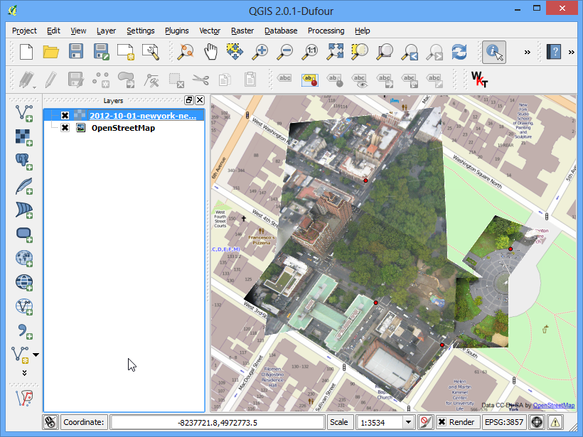

Γεω-αναφορά Αεροφωτογραφιών
[ Download PDF A4
Letter ]
Σε αυτό το tutorial Γεω-αναφορά Τοπογραφικών Φύλλων και Σαρωμένων Χαρτών καλύψαμε τη βασική διαδικασία της γεω-αναφοράς στο QGIS. Αυτή η μέθοδος περιελάμβανε την ανάγνωση των συντεταγμένων από τους σαρωμένους σας χάρτες και την χειροκίνητη εισαγωγή τους. Πολλές φορές όμως, μπορεί να μην έχετε τις συντεταγμένες εκτυπωμένες στον χάρτη σας ή να προσπαθείτε να κάνετε γεω-αναφορά μιας εικόνας. Σε αυτήν την περίπτωση, μπορείτε να χρησιμοποιήσετε άλλη πηγή γεω-αναφοράς δεδομένων ως εισαγωγή. Σε αυτό το tutorial, θα μάθετε πως να χρησιμοποιείτε ήδη υπάρχουσες πηγές δεδομένων στη διαδικασία γεω-αναφοράς σας.
Επισκόπηση εργασίας
Θα κάνουμε γεω-αναφορά balloon εικόνας, υψηλής ανάλυσης, με τη χρήση συντεταγμένων αναφοράς από το OpenStreetMap.
Άλλες δεξιότητες που θα μάθετε
Λήψη εικόνας υψηλής ανάλυσης δημοσίου τομέα.
Χρήση του πρόσθετου OpenLayers στο QGIS.
Μετατροπή συντεταγμένων μεταξύ διάφορων προβολών, χρησιμοποιώντας το εργαλείο γραμμής εντολών cs2cs.
Χρήση ενός επιπέδου στο οποίο ήδη έχει γίνει γεω-αναφορά, για να εισάγουμε GCP σημεία στο εργαλείο Georeferencer.
Τοποθέτηση μια τιμής χωρίς δεδομένα για ένα επίπεδο.
Λήψη δεδομένων
Σε αυτό το tutorial, θα χρησιμοποιήσουμε κάποιες υπέροχες εικόνες χαρταετού και μπαλονιού, οι οποίες συλλέχθηκαν από το The Public Laboratory. Επίσης, έχουν διαθέσιμες τις εκδόσεις των γεω-αναφορών των εικόνων, αλλά εμείς θα κατεβάσουμε μια JPG εικόνα στην οποία δεν έχει γίνει γεω-αναφορά και θα προχωρήσουμε με τη διαδικασία της γεω-αναφοράς στο QGIS. Αν σας αρέσει η συλλογή εικόνων που προσφέρουν, μπορείτε να την εξερευνήσετε στο <http://google-latlong.blogspot.in/2012/04/ balloon-and-kite-imagery-in-google.html>`_ στο Google Earth επίσης.
Κατεβάστε την JPG εικόνα Washington Square Park, New York. Μπορείτε να κάνετε δεξί κλικ πάνω στο κουμπί JPG και να επιλέξετε Save link as....
Διαδικασία
Για αυτό το tutorial, θα χρησιμοποιήσουμε το επίπεδο OpenStreetMap ως το επίπεδο αναφοράς μας. Εγκαταστήστε το πρόσθετο OpenLayers από το . Δείτε Χρησιμοποιώντας Πρόσθετες Λειτουργίες για περισσότερες πληροφορίες σχετικά με τη χρήση των πρόσθετων στο QGIS.

Μόλις γίνει η εγκατάσταση, πηγαίνετε στο . Αυτό θα προσθέσει ένα επίπεδο με προ-εγκατεστημένα πλακίδια από το OpenStreetMap data.

Τώρα έχετε φορτωμένο στο QGIS το επίπεδο OpenStreetMap. Σημειώστε το Coordinate Reference System (CRS) για αυτό το επίπεδο. Είναι ρυθμισμένο ως EPSG 3857 Pseudo Mercator. Αυτό είναι σημαντικό να το σημειώσετε, μιας και οι συντεταγμένες που θα αντλήσουμε από αυτό το επίπεδο, θα είναι σε αυτό το CRS.

Τώρα, η εργασία είναι να εντοπίσουμε τη γενικότερη εγγύτητα της περιοχής, στην οποία προσπαθούμε να κάνουμε τη γεω-αναφορά. Μπορείτε απλά να χρησιμοποιήσετε τα εργαλεία Μετακίνηση και Μεγέθυνση, για να εντοπίσετε αυτήν την περιοχή στο OpenStreetMap επίπεδο. Αλλά, μπορούμε να εκμεταλλευτούμε αυτήν την ευκαιρία για να κάνουμε επίδειξη ενός άλλου εργαλείου, το οποίο μπορεί να σας χρησιμεύσει στο μέλλον. Γνωρίζουμε ότι η εικόνα που κατεβάσαμε είναι το Washington Square Park στην Νέα Υόρκη. Εάν αναζητήσετε αυτό το μέρος, θα μπορέσετε να εντοπίσετε την wikipedia ιστοσελίδα του. Οι συντεταγμένες για το πάρκο βρίσκονται εκεί πέρα.

Θα παρατηρήσετε ότι οι συντεταγμένες είναι σε Βαθμούς/Λεπτά/Δευτερόλεπτα και είναι σε Γεωγραφικό Πλάτος και Μήκος. Αλλά εφόσον το επίπεδο μας είναι σε Mercator προβολή, θα χρειαστούμε Mercator συντεταγμένες για να εντοπίσουμε το πάρκο. Εδώ είναι που το εργαλείο γραμμής εντολών cs2cs θα μας φανεί χρήσιμο. Εάν έχετε εγκαταστήσει το QGIS από το OSGeo4W installer, θα το έχετε ήδη εγκατεστημένο στο σύστημα σας. Σε Linux και Mac, έρχεται επίσης εγκατεστημένο με το QGIS. Ανοίξτε ένα τερματικό και πληκτρολογήστε cs2cs για να ελέγξετε αν είναι διαθέσιμο. Οι χρήστες των Windows μπορούν να βρουν τερματικό παράθυρο στο .

Μόλις βεβαιωθείτε ότι το εργαλείο cs2cs υπάρχει στο σύστημα σας, ήρθε η ώρα να μετατρέψουμε το Γεωγραφικό Πλάτος και Μήκος σε Mercator συντεταγμένες. Ο τρόπος με τον οποίο δουλεύει αυτό το εργαλείο, είναι ότι πρέπει να διευκρινίσετε ένα source και destination CRS. Ο CRS ορισμός μπορεί να είναι ένα PROJ4 string ή ένα EPSG code. Εφόσον ήδη γνωρίζουμε τον EPSG κωδικό για το εισαγόμενο και εξαγόμενο CRS, θα χρησιμοποιήσουμε αυτό. Ο πιο απλός τρόπος για να χρησιμοποιήσετε το εργαλείο, είναι να εισάγετε τις συντεταγμένες στην ίδια τη γραμμή εντολών. Σημειώστε ότι το εργαλείο δέχεται συντεταγμένες με τη σειρά X Y, οπότε πρέπει να εισάγουμε Longitude Latitude. Εισάγετε την εντολή που ακολουθεί στο τερματικό και πατήστε Enter. Σημειώστε ότι πρέπει να αλλάξουμε τα εισαγωγικά (”) με καθέτους (\). Μόλις πατήσετε enter, θα δείτε το εργαλείο να επεξεργάζεται τις συντεταγμένες και να εκτυπώνει τις X Y συντεταγμένες σε EPSG 3857 CRS.
echo "-73d59'51\" 40d43'51\"" | cs2cs +init=EPSG:4326 +to +init=EPSG:3857
-8237364.02 4972720.34 0.00

Αντιγράψτε τις συντεταγμένες και μεταφερθείτε στο QGIS. Κάτω στο παράθυρο στου QGIS, θα δείτε ένα πλαίσιο κειμένου που λέγεται Coordinates. Εισάγετε εκεί τις συντεταγμένες σε μορφή X,Y. Πατήστε Enter. Θα δείτε τον χάρτη να μετακινείτε λίγο, αλλά όχι να μεγεθύνετε. Για να μεγεθύνετε στην περιοχή, επιλέξτε κλίμακα 1:2500 από το πλαίσιο κειμένου Scale, βρίσκεται δίπλα στο Coordinates και πατήστε Enter.

Ορίστε! Τώρα βλέπετε το Washington Square Park στον καμβά σας. Τώρα ήρθε η ώρα να ξεκινήσετε τη γεω-αναφορά σας. Ανοίξτε το Georeferencer από το . Εάν δε βλέπετε αυτό το αντικείμενο στο μενού, θα πρέπει να ενεργοποιήσετε το πρόσθετο Georeferencer GDAL από το .

Στο παράθυρο διαλόγου Georeferencer, πηγαίνετε στο . Πλοηγηθείτε στο JPG αρχείο που κατεβάσατε και πατήστε Open.

Στο Coordinate Reference System Selector, επιλέξτε EPSG:3857 Pseudo Mercator.

Τώρα πατήστε το κουμπί Add Point στη γραμμή εργαλείων και επιλέξτε μια εύκολα αναγνωρίσιμη περιοχή στην εικόνα. Γωνίες, διασταυρώσεις, πόλοι κλπ. είναι καλά σημεία ελέγχου.

Μόλις κάνετε κλικ στην εικόνα, σε ένα σημείο ελέγχου, θα δείτε ένα αναδυόμενο παράθυρο που θα σας ζητά να εισάγετε συντεταγμένες ενός χάρτη. Πατήστε το κουμπί From map canvas.

Βρείτε την ίδια τοποθεσία στο επίπεδο αναφοράς σας π.χ. στο OpenStreetMap επίπεδο και πατήστε εκεί. Οι συντεταγμένες διανέμονται αυτόματα από το κλικ που κάνατε πάνω στον καμβά του χάρτη. Πατήστε Ok. Παρομοίως, επιλέξτε τουλάχιστον 4 σημεία στην εικόνα και προσθέστε τις συντεταγμένες τους από το επίπεδο αναφοράς.

Τώρα πηγαίνετε στο

Επιλέξτε τις ρυθμίσεις όπως φαίνονται παρακάτω. Βεβαιωθείτε ότι είναι τσεκαρισμένο το κουτάκι guilabel:Load in QGIS when done. Πατήστε OK. Πίσω στο παράθυρο Georeferencer, πηγαίνετε στο . Αυτό θα ξεκινήσει τη διαδικασία της αναδίπλωσης της εικόνας με τη χρήση των GCPs και θα δημιουργήσει το πλέγμα στόχου.

Μόλις τελειώσει η διαδικασία, θα δείτε το επίπεδο στο οποίο έχει γίνει η γεω-αναφορά, να έχει φορτώσει στο QGIS. Αν όλα πήγαν καλά, θα το δείτε να βρίσκεται ωραία πάνω από το OpenStreetMap επίπεδο.

Για να κάνουμε το αποτέλεσμα μας να φαίνεται πιο ωραίο, ας αφαιρέσουμε τις ασπρόμαυρες, χωρίς δεδομένα, τιμές. Κάντε δεξί κλικ στο επίπεδο εικόνας και επιλέξτε Properties.

Αλλάξτε στην καρτέλα Transparency. Θέλουμε να υποδηλώσουμε ότι, οποιαδήποτε μαύρα ή άσπρα pixels στην εικόνα, είναι τιμές ‘χωρίς δεδομένα’ και θα πρέπει να γίνουν διάφανα. Εισάγετε 0 ως No data value. Επίσης, στο Custom transparency options, πατήστε το + button and add 255 as the transparent pixels for each band and enter 100 as the :Percent transparent. Πατήστε OK.

Τώρα θα δείτε τη εικόνα στην οποία κάνατε γεω-αναφορά, να εμφανίζεται όμορφα πάνω στο επίπεδο βάσης.
